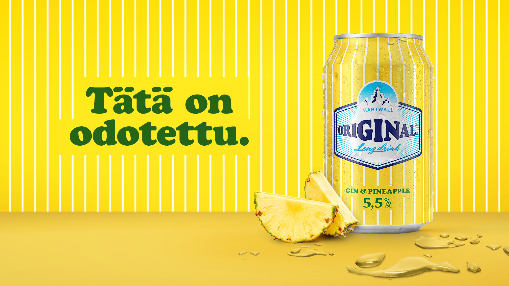

Eri tuotteet
Ananas lonekort ovat iso osa suomalaisen miehen ja ehkä jopa naistenkin elämää.
Tällä sivustolla pääset tutustumaan ananas lonkeroihin..
Ananas lonkeroita myydään erillaisissa muodoissa, esim lasissa, ja tölkissä.
Kaupasta löytää useimmiten sixpack, lasipullo, 0,33l ja 0,5l kokoja tästä rakkaasta tuotteesta.
